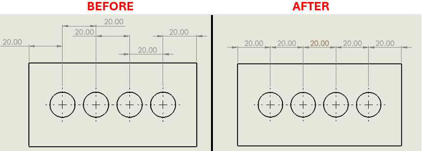

Align All Dimensions Automatically
Description
This VBA macro automates selecting and arranging dimensions in SOLIDWORKS drawings. It loops through views, selects display dimensions, and auto-arranges them.
System Requirements
- SOLIDWORKS 2014 or newer
- Active drawing document open in SOLIDWORKS
VBA Code:
' ********************************************************************
' DISCLAIMER:
' This code is provided as-is with no warranty or liability by
' Blue Byte Systems Inc. The company assumes no responsibility for
' any issues arising from the use of this code in production.
' ********************************************************************
Option Explicit
Public swApp As SldWorks.SldWorks
Public swModel As SldWorks.ModelDoc2
Public swDraw As SldWorks.DrawingDoc
Public swView As SldWorks.View
Public swDispDim As SldWorks.DisplayDimension
Public swAnn As SldWorks.Annotation
Sub main()
Set swApp = Application.SldWorks
Set swModel = swApp.ActiveDoc
' Ensure the active document is a drawing
If swModel.GetType <> swDocDRAWING Then
MsgBox "This macro only works on drawings!", vbCritical, "Error"
Exit Sub
End If
Set swDraw = swModel
Set swView = swDraw.GetFirstView
swModel.ClearSelection2 True
' Loop through all views and select display dimensions
Do While Not swView Is Nothing
Set swDispDim = swView.GetFirstDisplayDimension5
Do While Not swDispDim Is Nothing
Set swAnn = swDispDim.GetAnnotation
swAnn.Select True
Set swDispDim = swDispDim.GetNext5
Loop
Set swView = swView.GetNextView
Loop
' Auto-arrange dimensions
swModel.Extension.AlignDimensions swAlignDimensionType_AutoArrange, 0.06
swModel.ClearSelection2 True
End Sub
System Requirements
To run this VBA macro, ensure that your system meets the following requirements:
- SOLIDWORKS Version: SOLIDWORKS 2018 or later
- VBA Environment: Pre-installed with SOLIDWORKS (Access via Tools > Macro > New or Edit)
- Operating System: Windows 7, 8, 10, or later
Macro
You can download the macro from here
Customization
Need to modify the macro to meet specific requirements or integrate it with other processes? We provide custom macro development tailored to your needs. Contact us.